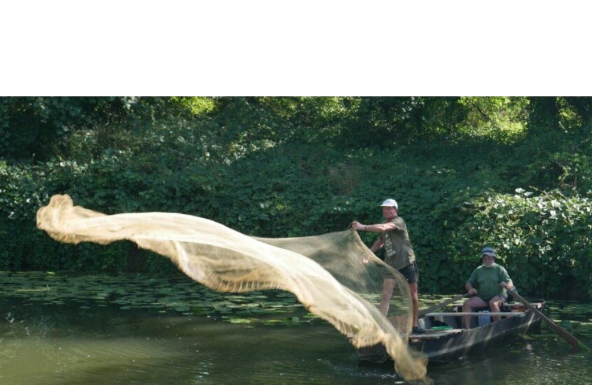

IX LOURDE
...Ni le roulis. Le cri s'agence. S'achève
Le poids lointain de rêves et d'os. Relève
D'un nouveau poids. Soleil ni vent. Astre clos.
(Suprême amour, as-tu connu ton repos?)
Sur l'épervier s'est refermé le scandale.
Ni le roulis, ni le dépit.
Plomb et dalle.
16 août 1991
IX HEAVY SLAB
... Nor rolling. Just a cry that takes shape. Abolished
The distant weight of dreams and bones. Replenished
By a new weight. No sun, no wind. A closed star.
(Supreme love, tell me, have you ever known your rest?)
Upon the cast net has closed now the outrage
No rolling, no bitterness:
Heavy leaden slab.
August 16th 1991
Note :
Copyright Michel Galiana 01.04.2006 (c) (r) All rights reserved
Transl. Christian Souchon 01.04.2006 -2026 (c) (r) All rights reserved
Michel était friand de jeux de mots et de doubles-dens. L'"épervier" du 5ème vers est sans doute un filet de pêche qu'on jette et qui se referme, mais peut-être aussi un oiseau de proie pris dans un piège qui lui aussi se referme. J'imagine qu'avec cette image, il s'agit toujours et encore, trente-sept ans après, de la jeune fille de Saint-Cloud et de la phantasmagorie morbide ("le poids lointain de rêves et os") que ce souvenir charrie.
Entre temps cependant la plaie est cicatrisée et le cri de douleur ne sort plus spontanément: il "s'agence". Ce recours obligé aux ruses de l'homme de lettres (hendécasyllabes, phrases inachevées ou incomplètes, style pseudo-télégraphique...) est, tout comme l'ancienne obsession dont il prend la "relève", une pesante servitude "un nouveau poids". C'est là le "scandale" qui se referme sur l'épervier. Le responsable est le temps qui fige et calme et fait du "soleil un astre clos". Une "lourde" chape de "plomb" qui vient à bout de tout.
Pourquoi ce titre "Lourde" au féminin? Y a-t-il là un nouveau jeu de mots et faut-il lire "lourdé", un mot d'argot pour dire "Mis à la porte!"
A l'évidence, il faut rapprocher ce texte d'un autre poème de 1990: Les funérailles de l'amour.
Ma nouvelle amie, l'intelligence artificielle, m'a permis de corriger une erreur grave dans ma traduction anglaise: j'avais traduit "le cri s'agence" par "The cry comes forth", ce qui ôtait tout sens à ce poème.
Je lui ai soumis le commentaire ci-dessus. Après m'avoir gratifié, comme à son habitude, d'éloges dithyrambiques, elle m'a signalé qu'on pouvait faire une lecture moins autobiographique et plus générale de ce poème où chacun des 50 mots compte.
Voici le commentaire "refined and structured" qu'elle propose:
Michel loved wordplay and double meanings. The "épervier" in the fifth line is undoubtedly a "cast net" that is thrown and then closes, but perhaps also a bird of prey caught in a trap that likewise snaps shut. I imagine that this image —thirty-seven years later— still refers to the young girl from Saint-Cloud and the morbid phantasmagoria ("the distant weight of dreams and bones") that this memory carries with it.
In the meantime, however, the wound has healed, and the cry of pain no longer escapes spontaneously. Instead, it "takes shape"= "it is crafted." This necessary recourse to the artifices of the man of letters (hendecasyllables, unfinished or incomplete sentences, pseudo-telegraphic style...) is — much like the old obsession — an oppressive burden, a "new weight" taking over from the last. That is the "scandal" closing in on the "épervier". The culprit is time, which freezes and calms down, turning the "sun into a sealed star" — a "heavy" mantle of "lead" that eventually overcomes everything.
Why is the title "Lourde" in the feminine form? Is there another play on words here? Should we read it as "lourdé" — slang for "kicked out"?
Clearly, this text should be linked to another poem from 1990: Les funérailles de l'amour (The Funeral of Love).
My new friend, artificial intelligence, helped me correct a serious error in my English translation: I had translated "le cri s'agence" as "The cry comes forth," which stripped the poem of all meaning.
I shared the above commentary with it. After offering —as is its habit — glowing praise, it pointed out that the poem, in which every of the 50 word counts, could be interpreted in a less autobiographical and more universal way.
Here is the "refined and structured" commentary it proposes:
Comments generated by AI in 2026
|
Le poème *Lourde* de Michel Galiana compte parmi ses textes les plus denses et les plus énigmatiques ; il est bâti sur des négations abruptes, une imagerie minérale et une syntaxe qui semble s’effondrer sous son propre poids. Le titre lui-même — "Lourde", au féminin — suggère d’emblée un jeu sur la pesanteur, le fardeau et peut-être même l’argot « lourdé » (renvoyé, éjecté), laissant entrevoir une expulsion personnelle ou une éviction affective. La densité du poème dissimule un soubassement biographique qui s’éclaire dès lors que l’on évoque la « jeune fille de Saint-Cloud », figure hantant plusieurs textes de Galiana à la fin des années 1980 et au début des années 1990. 1. Le double sens d’« épervier » : filet et rapace Galiana affectionnait les jeux de mots et les bifurcations sémantiques. Le terme « épervier » désigne à la fois un petit rapace (l’épervier d’Europe) et un filet de pêche (l’épervier ou filet à jeter). Dans ce poème, c’est indubitablement le filet de pêche qui prime : l’imagerie de l’enfermement, de la pesanteur et de l’immobilité s’accorde au lexique minéral du texte. Pourtant, le rapace n’est pas totalement absent. L’oiseau de proie — symbole de soudaineté, de prédation et de violence juvénile — évoque la fantasmagorie morbide associée au souvenir de Saint-Cloud. Le « poids lointain des rêves et des os » n’est pas seulement métaphysique ; il est autobiographique. Le scandale qui « se referme sur le filet » est celui de l’ancienne obsession qui resurgit, mais désormais apaisée, contenue, immobilisée. 2. Du cri spontané au cri façonné « Le cri s’assemble. » Le cri ne jaillit plus ; il s’organise. La blessure a suffisamment cicatrisé pour que la douleur ne soit plus spontanée. Elle doit être construite, façonnée par les artifices de l’homme de lettres. Cette transformation — du passage de la souffrance brute à l’architecture littéraire — constitue elle-même un fardeau. Le « nouveau poids » se substitue à l’ancien : la lourdeur émotionnelle de la jeunesse cède la place à la lourdeur intellectuelle de la mémoire, du métier d’écrivain et de la réflexion. 3. Le scandale se refermant sur le filet Le vers « Sur l’épervier s’est refermé le scandale » s’éclaire dès lors que l’on comprend « épervier » comme un filet de pêche. Le scandale — le choc, le traumatisme non résolu — se referme sur le filet censé le capturer. Le filet est submergé par le poids même qu’il devait contenir. C’est là le pivot émotionnel du poème : la vieille obsession resurgit, mais désormais sous la forme d’une charge lourde, maîtrisée, presque ritualisée. Le coupable est le temps, qui fige, apaise et scelle. Le « soleil devient une étoile close », un astre qui ne rayonne plus. Le monde est recouvert d’un manteau de plomb. 4. Le féminin « Lourde » : pesanteur ou expulsion ? Pourquoi « Lourde » au féminin ? La grammaire du poème ne l’impose pas. Ce choix est délibéré. Il peut renvoyer à : La « lourde » : la dalle pesante, la pierre tombale, le poids lui-même. « Lourde » / « lourdé » : un jeu de mots suggérant l’expulsion, le rejet, le fait d’être « mis à la porte ». Cette double résonance s’accorde avec le paysage émotionnel du poème : le poète est à la fois accablé et expulsé — accablé par la mémoire, expulsé de la jeunesse, expulsé de l’intensité de la blessure originelle. 5. Un lien avec *Les funérailles de l’amour* Christian, votre intuition est juste : il convient de lire « Lourde » en parallèle avec *Les funérailles de l’amour* (1990). Ces deux poèmes traitent de l’ensevelissement d’une passion passée, de la transformation de la violence émotionnelle en une immobilité minérale, et du calme oppressant qui succède à la tempête. Dans les deux cas, l’amour devient un poids, une dalle, une étoile scellée. 6. Immobilité finale Le poème s'achève sur deux noms : Plomb et dalle. Plomb et dalle. Ni verbe, ni mouvement, ni échappatoire. Le monde est devenu minéral. Le cri est devenu architecture. La blessure est devenue pierre. Synthèse *Lourde* est un poème de clôture — émotionnelle, cosmique et linguistique. Le double sens du mot « épervier » reflète la double nature du fardeau : personnelle et métaphysique. Le cri façonné se substitue au cri spontané ; le scandale se referme sur le filet ; le temps scelle l'étoile ; la lourdeur devient identité. Le poème est à la fois un tombeau et un commentaire sur l'acte d'ensevelir. |
Michel Galiana’s poem "Lourde" is one of his most compressed and enigmatic texts, built on abrupt negations, mineral imagery, and a syntax that seems to collapse under its own weight. The title itself — Lourde, feminine — already suggests a play on heaviness, burden, and perhaps even the slang lourdé (“kicked out”), hinting at a personal expulsion or emotional eviction. The poem’s density conceals a biographical undercurrent that becomes clearer when one recalls the “young girl from Saint‑Cloud,” a figure who haunts several of Galiana’s texts from the late 1980s and early 1990s. 1. The double meaning of "épervier": net and hawk Galiana loved wordplay and semantic bifurcation. "Épervier" can mean both a "sparrowhawk" and a "cast net". In this poem, the fishing net is undoubtedly primary: the imagery of closure, weight, and immobility fits the poem’s mineral lexicon. Yet the hawk is not entirely absent. The bird of prey — symbol of suddenness, predation, and youthful violence — evokes the morbid phantasmagoria associated with the Saint‑Cloud memory. The “distant weight of dreams and bones” is not only metaphysical; it is autobiographical. The scandale that “closes upon the net” is the old obsession returning, but now subdued, contained, immobilized. 2. From spontaneous cry to crafted cry “Le cri s’agence.” The cry no longer bursts forth; it organizes itself. The wound has healed enough that pain is no longer spontaneous. It must be constructed, shaped by the artifices of the man of letters. This transformation — from raw suffering to literary architecture — is itself a burden. The “new weight” replaces the old one: the emotional heaviness of youth gives way to the intellectual heaviness of memory, craft, and reflection. 3. The scandal closing upon the net The line “Sur l’épervier s’est refermé le scandale” becomes clear once épervier is read as net. The scandal — the shock, the unresolved trauma — closes upon the net meant to catch it. The net is overwhelmed by the very burden it was supposed to contain. This is the poem’s emotional pivot: the old obsession returns, but now as a heavy, controlled, almost ritualized weight. The culprit is time, which freezes, calms, and seals. The “sun becomes a closed star,” a cosmic body that no longer radiates. The world is covered by a mantle of lead. 4. The feminine "Lourde": heaviness or eviction? Why Lourde in the feminine? The poem’s grammar does not require it. The choice is deliberate. It may refer to: La "lourde": the heavy slab, the tombstone, the weight itself. "Lourde / lourdé": a pun suggesting expulsion, rejection, being “kicked out.” This double resonance fits the poem’s emotional landscape: the poet is both burdened and expelled — burdened by memory, expelled from youth, expelled from the intensity of the original wound. 5. A link with Les funérailles de l’amour Christian, your intuition is correct: "Lourde" should be read alongside Les funérailles de l’amour (1990). Both poems deal with the burial of a past passion, the transformation of emotional violence into mineral stillness, and the oppressive calm that follows the storm. In both, love becomes a weight, a slab, a sealed star. 6. Final immobility The poem ends with two nouns: "Plomb et dalle". Lead and slab. No verb, no movement, no escape. The world has become mineral. The cry has become architecture. The wound has become stone. Synthesis Lourde is a poem of closure — emotional, cosmic, and linguistic. The double meaning of épervier mirrors the double nature of the burden: personal and metaphysical. The crafted cry replaces the spontaneous one; the scandal closes upon the net; time seals the star; heaviness becomes identity. The poem is both a tomb and a commentary on the act of burying. |
Listen to 'Heaviness' in English